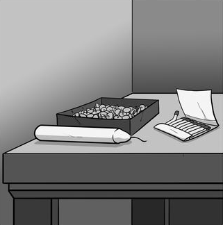
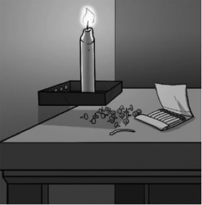

“ Motivatie is wat een individu tot een bepaald gedrag drijft. Motivatie heeft invloed op de initiatie, richting, intensiteit en volharding van het menselijk gedrag. Motivatie ontstaat uit een samenspel tussen de biologische (aangeboren) en cultuurafhankelijke (aangeleerde) eigenschappen van een individu en de omgeving van dat individu. ” Geciteerd uit Wikipedia.
Volgens Wikipedia zijn er 2 vormen van motivatie: intrinsieke en extrinsieke. Extrinsieke motivatie is de motivatie die ontstaat vanuit een externe bron, bijvoorbeeld het vooruitzicht op een beloning of een straf bij een bepaalde handeling. Bij intrinsiek motivatie komt de motivatie uit jezelf. Deze handelt niet om een externe beloning te bemachtigen of een straf te ontkomen. Metaforisch beschreven: bij intrinsieke motivatie draait het om het spel, en bij extrinsieke motivatie om de knikkers.
Volgens Jan Steven is motivatie de reden waarom je in beweging komt. Het woord motivatie komt van ‘to motion’. Je kunt gemotiveerd zijn om iedere dag een uur te sporten, een studie te beginnen of naar uw werk te gaan. Wanneer je intrinsiek gemotiveerd bent, kom je uit jezelf in beweging. Uit eigen beweging gaat je die zaken doen die je wilt doen.
Britttamar zegt “Wanneer je iets of iemand heel graag wil hebben, ben je doorgaans ‘gemotiveerd’ om datgene wat je wil, ook daadwerkelijk te krijgen. Het woord ‘motivatie’ wordt in de dagelijkse taal daarom gebruikt om aan te geven ‘hoe graag’ iemand iets wil. In sociale psychologie is de definitie en gebruik van de term motivatie iets complexer. Naast gevoelens, en kennis, is motivatie een van de dingen die ervoor zorgen dat wij zijn zoals we zijn, en doen zoals we doen.“ .
Dan Pink heeft een bepaalde geval over hoe de business wordt gerund. Dit verteld hij in zijn
TED talk.

Hij laat een afbeelding zien genaamd "The candle problem", die gecreëerd is in 1945
door psycholoog Karl Duncker. Dit experiment is gebruikt voor gedragswetenschap.
Stel je voor je doet dit experiment en er wordt tegen je gezegd, "Jou taak is om de kaars
aan de muur te bevestigen, zodat het kaarsvet niet op de tafel morst." De meeste mensen hebben
niet meteen de juiste oplossing. Hieronder de oplossing:

Bij dit experiment is de bedoeling dat je niet de traditionele manier gaat gebruiken om het op te lossen.
Je denkt er dus niet bij na om het bakje te gebruiken.
Er wordt geleerd om gefocesd naar je doel te kijken. Dat is niet het geval bij de "candle problem".
Uit een ander experiment komt uit dat beloning op werk niet meer van toepassing is in deze tijd.
Er wordt verwacht dat de mensen die een beloning krijgen beter gaan werken, maar dat is niet zo. Het gaat
ook niet om de waarde van de beloning, dit experiment is overigens in verschillende soorten uitgevoerd.
Ik denk dat de Dan Pink probeert te zeggen dat je motivatie niet aan een beloning of straf vast zit
(Extrinsieke motivatie). Maar dat het uit je zelf moet komen (Intrinsieke motivatie). Je gaat
waarschijnlijk slechter presteren als je een beloning krijgt of straf, en presteerd beter als je eigen doelen stelt.
In een artikel van auteur Linda van der Veen staat
“ Uit mijn onderzoek blijkt dat softwaretesters de inhoud van het werk,
het verschil kunnen maken voor de klant en de diversiteit van het vak het leukste vinden.
Ze willen hierbij graag klanten helpen met het verbeteren van hun processen en kwaliteit.
“
.
Het voornaamste doel van de testers is niet om een beloning te krijgen, maar om een goed resultaat te leveren.
Ze vinden de wens van de klanten belangrijker en dat motiveert hen om door te gaan.
In het onderzoek staat ook dat ze willen zien en horen dat ze van toegevoegde waarde zijn en willen graag meer
invloed op hun ontwikkeling. Dit geeft letterlijk aan dat het om intrinsieke motivatie gaat, dat de motivatie
uit hun zelf komt.
Volgens Marieke van Oosterhout is prestatiemotivatie de innerlijke wil om goed te presenteren, om doelen te behalen
en succesvol te zijn. Dit geeft ook letterlijk weer dat het om intrinsieke motivatie gaat. Het gaat hier ook niet om
een beloning, maar de innerlijke wil om goed te presenteren. Intrinsieke betekent letterlijk "van binnen afkomstig".
Je bent in sterke mate extrinsiek gemotiveerd en redelijk intrinsiek gemotiveerd. Dat je in sterke mate extrinsiek
gemotiveerd bent betekent dat je het erg belangrijk vindt wat je met je studie kunt bereiken. Je doet je best op
school/in je studie omdat je later veel geld wilt verdienen, maatschappelijke status wilt hebben en/of erkenning
van mensen wilt krijgen. Op zich is het heel goed om bij dergelijke dingen stil te staan. Je leeft immers niet
in een sociaal isolement en moet straks wel je eigen boterham zien te verdienen.
Dat je redelijk intrinsiek gemotiveerd bent betekent dat je het ook best leuk vindt om te studeren. Maar héél leuk
vind je het niet. Voor jou is het resultaat van je studie belangrijker dan je studie zelf.
Tip: Zolang je je studie leuk vindt is er niks aan de hand. Kijk wel uit dat je een studie of beroep niet alléén
maar kiest om anderen te plezieren of omwille van het geld. Dan bestaat de kans dat je ongelukkig wordt.
Ik ben het half eens met het resultaat.
Ik stel meestal mijn huiswerk uit, en maak het vaak een dag voor de deadline. Ik heb dan ook gewoon een goed cijfer
maar dat kan natuurlijk beter als ik optijd aan de slag ga.
Het leren van nieuw onderwerp vind ik altijd wel interessant.
Mijn eigen vrijheid en zelfstandigheid vind ik ook belangrijk .
Ik denk dat ik met mijn studie meer kan bereiken, niet alleen om een baan te vinden of meer geld te verdienen maar ook
meer kennis op te doen. Het is ook mooi erkenning van mensen mag te krijgen op je voortgang en/of resultaat.
Uit deze test bleek dat 'Creativiteit (18 punten)' en 'Onafhankelijkheid (18 punten)' mijn
belangrijkste punten zijn.
Als ik vaak ergens niet uit kom, los ik dat met een creativiteit op. Dat merk ik als het onderwerp wordt besproken.
Ik heb het vaak goed maar dan op een andere wijze uitgevoerd.
Het klopt dat ik in kleine groepjes of zelfstandig beter kan werken.
Onafhankelijkheid vind ik belangrijk omdat ik mijn eigen persoon ben. Ik wil niet steeds mensen volgen.
Ik heb ook zeker een eigen mening die ik belangrijk.
Mijn minst belangrijkste punt is 'Rijkdom (3 punten)'.
Ik vind geld belangrijk om onafhankelijkheid te zijn van anderen. Ik kan wel zeggen dat ik geld niet belangrijk
vind maar dan lieg ik. Geld heb je nou eenmaal nodig om te leven, maar als je alleen maar geld heb kan je ook niet
een gelukkig leven lijden.
Bron: Theorie Schein
Ik dacht dat ik op intrinsieke motivatie meer zou scoren, maar uit de de eerste test blijkt dat toch andersom. Terwijl ik het ook wel belangrijk om bijvoorbeeld een kans op een goeie baan mag vergroten (extrinsiek). Ik vind vindt van mezelf dat ik sterk intrinsiek ben gemotiveerd en dat ik beloning op iets niet verkeerd is.
Voor deze uitwerking zijn de volgende bronnen gebruikt: